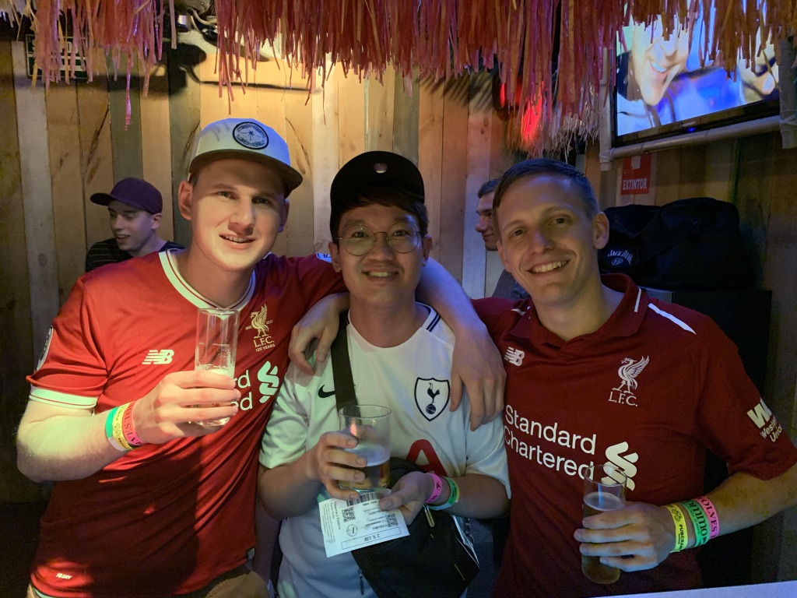

- Reason why want to change job?
- What's your goal?
- Explain what bootcamp is
WHY DO YOU WANT TO BE A SOFTWARE PROGRAMMER?
약 6년차에 접어든 미생생활을 끝내기로 결심한 것은 첫번째로, 아무나 할 수 없는 그리고
내가 주체가 되어 할 수 있는 전문적인 일을 하자!
무엇보다 "내가 똑똑해지는 일" 을 하고 싶었다.
기존 회사를 지속적으로 다녀야 할 객관적인 이유
- 급여가 저축도 하고 취미생활을 하기에 모자람 없는 금액이다.
- 식품쪽으로 5년 이상을 다녔고 나이도 이제 곧 해가 바뀌면 33살 이니까 다른 새로운 것을
시작하기엔 너무 늦은 나이라고 주변에서 말한다.
- 소스나 HMR 죽 을 개발하고 의사소통하는, 즉 회사에 내결려진 '내명함-대리 정광묵'을 내려놓으면
내가 내세울 만한 것은 그 경력으로 다른 식품 회사로 이직 하는 방법만이 유일한 길이다.
- 아마도 이런 사항을 부모님이 알면 매우 불안정함을 느끼실 수도 있다.
이제 그만 스탑잇!! 왜??
- 퇴근하고서도 불편하고 출근하면서도 한숨이 나오는 곳에서 부장? 차장 진급? 어림없는소리다!
- 개발업무에 각종 QA업무, 내 숨을 꼭 막히게 하는 부업무. 그리고 미래 비전이 없어 보인다.
- 오래 버티고 일해서 얻게 되는 경험치에 비해 잃을 것이 더 많다고 생각한다. 경험치=식품업계에서의 숙련도
그럼 지속적인 미생생활로 난 무엇을 잃게 되는가?
- 언젠가 회사에서 내치면 타 식품회사로 이직하는 거 빼고는 경력은 그대로 단절된다.
- 스트레스. 내 스스로 발전과 도움이 되는 스트레스가 아닌 원치않는 xxx와 입씨름 하는데서 오는 내
정신적, 신체적 건강의 악화
- 내가 희생하는 거에 비해 챙길 수 있는 것은 오로지 "월급" 뿐이다.
- 지속할 시 다른 더 위대하고 새로운 도전의 가망성은 점점 낮아질 것이다.
- 그러므로 더 크고 멋지고 위대한 자아 실현을 하고 싶다.
- 나와 똑같이, 비슷하게, 유사한 생각을 하는 집단으로 나를 들이 밀어 넣을 것이다.
- 일반적이고 평범해지고 싶은 생각은 단 1도 없다.
- 부모님이 거는 기대는 그냥 기대이다. 앞으로의 삶은 나 빼고는 아무도,아무도 책임져 주지 않는다.

시간은 돈이다. 돈은 시간이다. 돈을 버는데 시간을 투자하며 번 돈은 더 많은 돈을 버는데 쓴다.
그리고 벌어들인 순수익은 시간을 되사는데 써라.
생각해보면, 자신과 비슷한 생각을 하는 다른 누군가에게
둘러싸여 있을 때 받는 동기부여가 엄청나다. 그리고 그 때 흡수하는 영감은 책이나 동영상을 통해
받는 영감보다 훨씬 강력하다고 생각한다.
그럼 어떻게 할 건가?
확고한 목표와 구체적인 계획을 설정해서 최대한 세심하게 다듬는 작업을 한 뒤에, 부모님을 설득 한 다음
회사에 퇴사 계획을 알린다. 1월 말쯤 시작하게 될 부트캠프 프로그램에 12월 중순쯤까지는 금액을 모두 지불할 것이다.
부트캠프 위코드 홈페이지 url